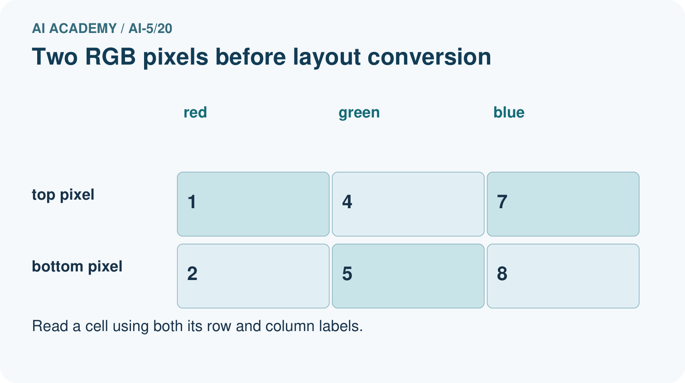
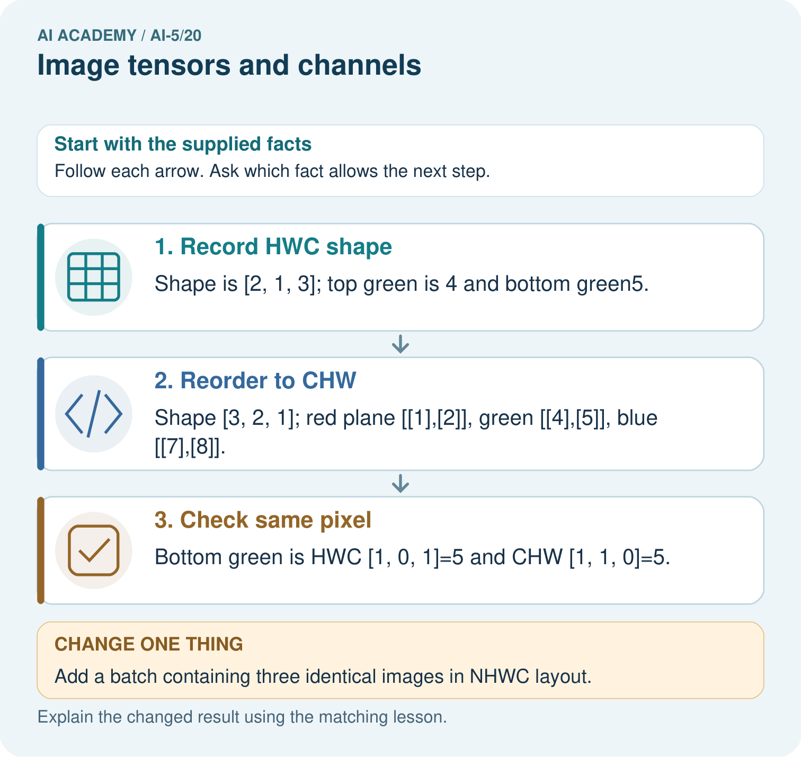

AI Academy · Level 5 · Grade 10 · Week 20 · Workbook
Image tensors and channels
Learn to understand, design, build, test and explain AI systems responsibly.
Project: Image-pattern Network Investigation
Workbook · 1 of 14
Recall and choose your starting point
Try the recall before opening notes. Then use a different colour or a labelled second line to correct your explanation.
Learned representations
Without opening the old lesson, explain one key idea from Learned representations. Give an example and a mistake that the idea helps you avoid.
Initialisation and reproducibility
Without opening the old lesson, explain one key idea from Initialisation and reproducibility. Give an example and a mistake that the idea helps you avoid.
Learning rate experiments
Without opening the old lesson, explain one key idea from Learning rate experiments. Give an example and a mistake that the idea helps you avoid.
Workbook · 2 of 14
Practise with fading help
Use W2: Audit an axis conversion for Image tensors and channels. Record the answer once; the lesson and workbook refer to the same attempt.
| Given inputs | Procedure I chose | Middle steps | Result and check |
|---|---|---|---|
Workbook · 3 of 14
Individual reasoning check
Use the worked case for Image tensors and channels. Proposed explanation: “Three channels mean three images”. Decide whether this explanation is supported. Point to the step or supplied fact that decides; explain your repair if needed.
Workbook · 4 of 14
Independent transfer case
Independent case: Convert a new image independently
A one-row two-column RGB image has pixels [10, 20, 30] then [40, 50, 60]. State its HWC shape and all three CHW planes. Give the green value at row 0 column 1 in both layouts. A batch contains four copies: give its NHWC shape and total channel-value count.
Attempt this case before feedback. Record any help. Earlier examples below are further practice; a case already practised with feedback cannot establish fresh transfer.
Workbook · 5 of 14
W1 Read a pixel precisely
For the lesson image, give image[1][0], image[1][0][2], the HWC shape, pixel count and number of channel values.
Workbook · 6 of 14
W2 Audit an axis conversion
A program flattens the lesson HWC array and groups the first four values into a 2 by 2 red plane. Give that incorrect plane and the correct plane. Identify a position where they disagree.
Workbook · 7 of 14
W3 Check scaling and lost colour
Scale [255, 128, 0] by 255, keeping the middle value as a fraction. Then calculate the classroom RGB means of pure red and pure green. Which operation loses the distinction between those colours?
Workbook · 8 of 14
W4 Convert a new image independently
A one-row two-column RGB image has pixels [10, 20, 30] then [40, 50, 60]. State its HWC shape and all three CHW planes. Give the green value at row 0 column 1 in both layouts. A batch contains four copies: give its NHWC shape and total channel-value count.
Workbook · 9 of 14
W5 Design revealing pipeline checks
The lesson image is loaded with red and blue exchanged, then scaled twice. Give two expected checks that would expose these errors even though the shape is correct.
Workbook · 10 of 14
Project checkpoint and reflection
Add a labelled image tensors and channels evidence sheet to Image-pattern Network Investigation. Show how you can read a pixel using declared row column and channel axes. Use the supplied fictional case and keep its inputs, intermediate steps, calculation or prediction, and limitation. Connect this record to last week’s record; a matching answer without a trace is insufficient.
Workbook · 11 of 14
Feedback, return check and learning record
| Evidence | My record |
|---|---|
| Worked alone / hint / model | |
| First step I repaired and why | |
| New case checked later; date and result | |
| What I can now explain without notes | |
| One remaining question |
Revisit this idea with your teacher after a delay. Familiarity is different from explaining and using it on a changed case.
Workbook · 12 of 14
Pictorial case practice: Image tensors and channels
Move colour values between tensor layouts without changing the pixels.
Toy RGB image has 2 rows, 1 column. Top pixel [1, 4, 7]; bottom [2, 5, 8]. HWC means height, width, channel.
All inputs and outcomes in this worked example are invented classroom data; no real model run is claimed.


Where is the bottom green pixel in the first batched image? Point to the relevant step in the picture, then write the changed result and the rule or evidence that supports it.
Support used: alone / hint / worked example. This record is practice evidence.
Project connection: For your Image-pattern Network Investigation, save the input, procedure, observed result and limitation of this check. Label this worked example as practice; use a different, previously unreviewed case when checking independent understanding.
Workbook · 13 of 14
Project portfolio milestone
Project: Image-pattern Network Investigation
Current milestone: Evaluate and revise. Compare with your starting method, explain errors and record a justified revision.
For your Image-pattern Network Investigation, save the input, procedure, observed result and limitation of this check. Label this worked example as practice; use a different, previously unreviewed case when checking independent understanding.
| Evidence to keep | My record |
|---|---|
| This week’s input and deciding step | |
| Prediction and actual result (or labelled paper trace) | |
| One change since the previous checkpoint and why | |
| One error or limit and the next test |
Workbook · 14 of 14
Supported practice and learning evidence
Use this supported practice once, in the browser or on paper. Keep the reserved independent assessment for a separate first attempt before teacher feedback.
Move colour values between tensor layouts without changing the pixels.
Practice 1: explain the deciding evidence
Which labelled step matches this detail? Bottom green is HWC [1, 0, 1]=5 and CHW [1, 1, 0]=5.
1. Record HWC shape
2. Reorder to CHW
3. Check same pixel
Hint if needed: Read the steps in the pictorial case. Match the supplied detail to the stage that performs or records it.
After your attempt, compare with the supported explanation: Check same pixel Bottom green is HWC [1, 0, 1]=5 and CHW [1, 1, 0]=5. A tensor is an array with named dimensions. HWC orders height, width and colour; CHW puts colour first. Rearranging the layout changes where values are stored, not the colour measurement itself. Trace a named pixel through both layouts using zero-based indices. Adding a batch dimension counts images and does not add a new colour channel.
Practice 2: explain the deciding evidence
Changed-case practice: Add a batch containing three identical images in NHWC layout. Which conclusion is supported by the supplied facts?
1. Batch shape is [3, 2, 1, 3].
2. We can decide the result without examining the changed input or the procedure.
3. This one example guarantees correct results for every future input.
Hint if needed: Use the changed condition and the deciding step in the pictorial trace. The answer must say what follows from those facts.
After your attempt, compare with the supported explanation: Batch shape is [3, 2, 1, 3]. The new first dimension counts images; it does not add a fourth colour channel.
Repair a missing building block
Review Learned representations (ai-5/19). Goal: Trace an input through a hidden representation and a decision rule. Short practice: Why can no deterministic head using only the sum classify both correctly? Point to the relevant step in the picture, then write the changed result and the rule or evidence that supports it.. Return to this week and explain what you changed.
Review Initialisation and reproducibility (ai-5/17). Goal: Trace how starting values affect a fixed training budget. Short practice: Does the matching final loss mean the parameter values are equal? Point to the relevant step in the picture, then write the changed result and the rule or evidence that supports it.. Return to this week and explain what you changed.
Review Learning rate experiments (ai-5/14). Goal: Run a controlled comparison of learning rates. Short practice: What should a fair rate comparison hold fixed? Point to the relevant step in the picture, then write the changed result and the rule or evidence that supports it.. Return to this week and explain what you changed.
Predict, run and debug
The browser lab lets you edit the supported Python examples already included in this lesson. Predict first, run, inspect the actual output or error, change one input, then run again. Keep code, predictions, actual results and a reasoned revision together. On paper, label your result as a trace rather than an execution.
Keep your completed work
Use Download completed work in the hosted lesson to export your answers, reflections, practice feedback and code-run evidence. Open the HTML copy to read or print it. Drafts stay in this browser when storage is available; clear drafts on a shared device.